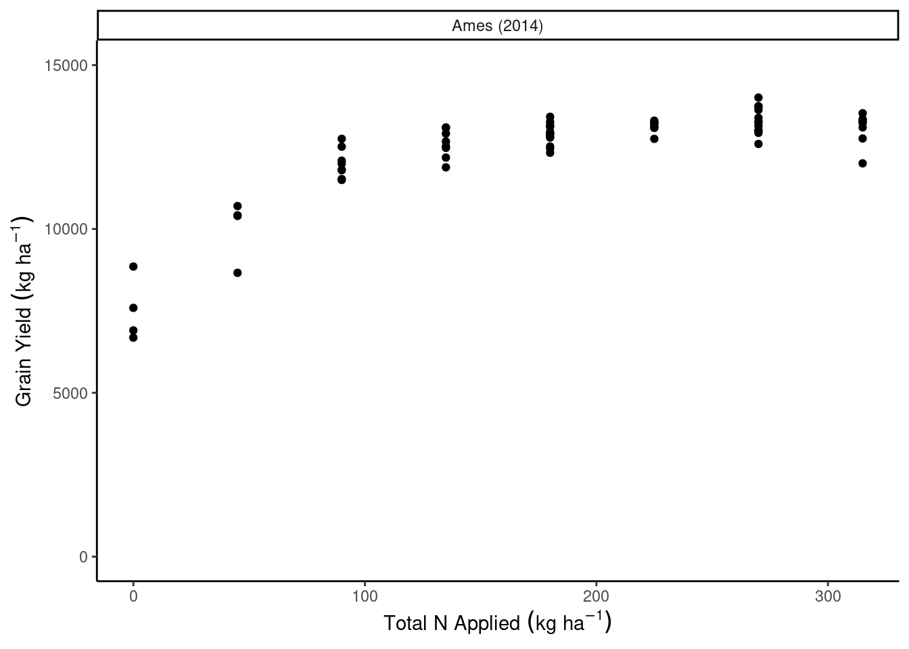
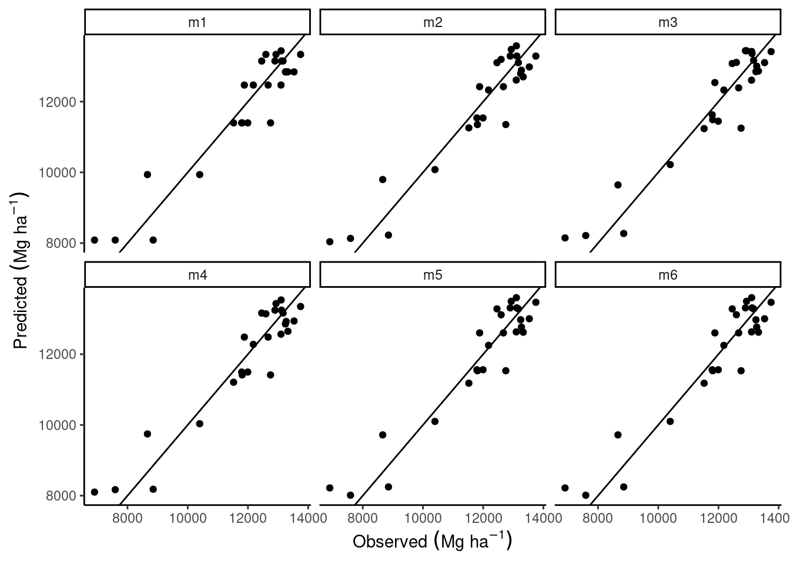
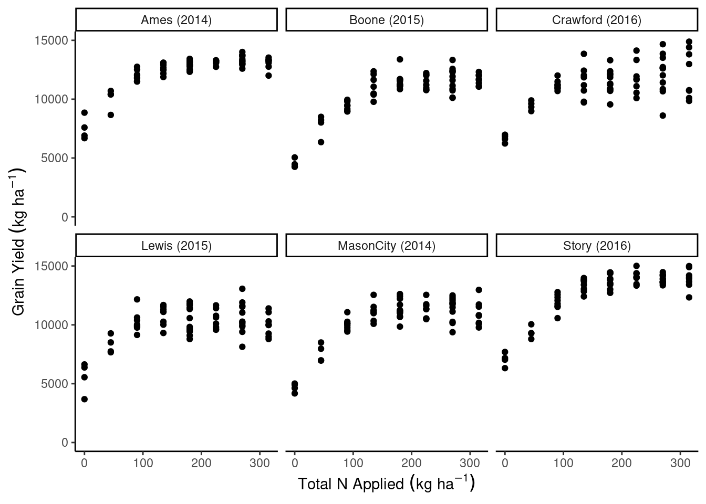

library(tidyverse)
# find data at https://doi.org/10.1002/agj2.20812
dd_yield <- readxl::read_xlsx("data/8.Yield_Plant_Measurements.xlsx", sheet = 2) %>%
filter(Year == 2014,
State == "IA",
Site == "Ames") %>%
mutate(across(VT_TissN:R4N, ~ as.numeric(.)))
dd_soil <- readxl::read_xlsx("data/1.Site_Characterization.xlsx", sheet = 2) %>%
filter(Year == 2014,
State == "IA",
Site == "Ames",
Horizon == "Ap") %>%
mutate(Block = as.numeric(Block),
across(Clay:WC, ~as.numeric(.)))
dd_N <- readxl::read_xlsx("data/4.SoilN.xlsx", sheet = 2) %>%
filter(Year == 2014,
State == "IA",
Site == "Ames",
Plot_ID %in% dd_yield$Plot_ID,
Sam_Time == "Post") %>%
mutate(across(c(Plot_ID, N_Trt, Plant_N, Side_N, Plant_N_SI, Side_N_SI), ~as.numeric(.)))
dd_complete <- dd_yield %>%
left_join(dd_soil) %>%
left_join(dd_N)
dd_complete <- dd_complete %>%
rownames_to_column("id") %>%
mutate(gyield_14 = GYdry/.94,
N_total = Plant_N_SI + Side_N_SI,
sy = paste0(Site," (", Year, ")"),
sy_f = as.numeric(factor(sy)),
id = as.numeric(id)) Day 22 - 10/09/2024
Announcements
- A really quick Kahoot
- Today’s office hours are 1-2pm.
Model selection
- How many variables should we include in our model?
- Bias-variance trade off (show on whiteboard)
- What defines the “goodness” of a model?
- Penalized fit (i.e., penalty for including too many parameters)
- Out-of-sample prediction accuracy
- Validation set
- Cross-validation (k-fold/leave-one-out)
- Validation set
- A paper on how to evaluate predictions versus observed values.
- Penalized fit (i.e., penalty for including too many parameters)
Variable selection based on out-of-sample prediction accuracy
\[y\sim N(\mu, \sigma^2)\]
\[\mu = \mathbf{x}'\boldsymbol{\beta}\]
\[\hat{\mu}_{new} = \mathbf{x}_{new}'\hat{\boldsymbol{\beta}}\]
Under the out-of-sample prediction accuracy criterion, we evaluate how the models estimate \(\mu_{new}\) by checking how far the \(\hat{\mu}_{new}\) estimate is from the observed (yet not used to fit the model) \(y_{new}\).
Load the data
dd_complete %>%
ggplot(aes(N_total, gyield_14))+
geom_point()+
facet_wrap(~sy)+
coord_cartesian(ylim = c(0, 15000))+
theme_classic()+
labs(x = expression(Total~N~Applied~(kg~ha^{-1})),
y = expression(Grain~Yield~(kg~ha^{-1})))
Validation set approach
id <- unique(dd_complete$id)
n <- length(id)
set.seed(54)
subset_fit <- sample(id, size = n*.6, replace = FALSE)
dd_complete_fit <- dd_complete %>%
filter(id %in% subset_fit)
dd_complete_test <- dd_complete %>%
filter(!id %in% subset_fit)m1 <- lm(gyield_14 ~ N_total + I(N_total^2), data = dd_complete_fit)
m2 <- lm(gyield_14 ~ N_total + I(N_total^2) + Block , data = dd_complete_fit)
m3 <- lm(gyield_14 ~ N_total + I(N_total^2) + Block + PMPM, data = dd_complete_fit)
m4 <- lm(gyield_14 ~ N_total + I(N_total^2) + Block + Sand, data = dd_complete_fit)
m5 <- lm(gyield_14 ~ N_total + I(N_total^2) + Block + Sand + Clay, data = dd_complete_fit)
m6 <- lm(gyield_14 ~ N_total + I(N_total^2) + Block + Sand + Clay + Silt, data = dd_complete_fit)dd_complete_test$pred_m1 <- predict(m1, newdata = dd_complete_test)
dd_complete_test$pred_m2 <- predict(m2, newdata = dd_complete_test)
dd_complete_test$pred_m3 <- predict(m3, newdata = dd_complete_test)
dd_complete_test$pred_m4 <- predict(m4, newdata = dd_complete_test)
dd_complete_test$pred_m5 <- predict(m5, newdata = dd_complete_test)
dd_complete_test$pred_m6 <- predict(m6, newdata = dd_complete_test)
dd_complete_test %>%
summarise(rmse_m1 = sqrt(mean((gyield_14 - pred_m1)^2)),
rmse_m2 = sqrt(mean((gyield_14 - pred_m2)^2)),
rmse_m3 = sqrt(mean((gyield_14 - pred_m3)^2)),
rmse_m4 = sqrt(mean((gyield_14 - pred_m4)^2)),
rmse_m5 = sqrt(mean((gyield_14 - pred_m5)^2)),
rmse_m6 = sqrt(mean((gyield_14 - pred_m6)^2)))# A tibble: 1 × 6
rmse_m1 rmse_m2 rmse_m3 rmse_m4 rmse_m5 rmse_m6
<dbl> <dbl> <dbl> <dbl> <dbl> <dbl>
1 637. 627. 618. 640. 648. 648.dd_complete_test %>%
pivot_longer(cols = pred_m1:pred_m6) %>%
mutate(name = str_replace(name, "pred_", "")) %>%
ggplot(aes(gyield_14, value))+
geom_point()+
labs(x = expression(Observed~(Mg~ha^{-1})),
y = expression(Predicted~(Mg~ha^{-1})))+
facet_wrap(~name)+
geom_abline(slope = 1)+
theme_classic()
Cross-validation
- \(k\)-fold cross validation
- leave-one-out cross validation (\(n\)-fold cross validation)
library(caret)
caret::train(gyield_14 ~ N_total + I(N_total^2), data = dd_complete, method = "lm",
trControl = trainControl(method = "cv", number = 10))Linear Regression
64 samples
1 predictor
No pre-processing
Resampling: Cross-Validated (10 fold)
Summary of sample sizes: 56, 57, 56, 59, 58, 57, ...
Resampling results:
RMSE Rsquared MAE
542.9698 0.7949004 452.1508
Tuning parameter 'intercept' was held constant at a value of TRUEcaret::train(gyield_14 ~ N_total + I(N_total^2), data = dd_complete, method = "lm",
trControl = trainControl(method = "LOOCV"))Linear Regression
64 samples
1 predictor
No pre-processing
Resampling: Leave-One-Out Cross-Validation
Summary of sample sizes: 63, 63, 63, 63, 63, 63, ...
Resampling results:
RMSE Rsquared MAE
594.5187 0.8525543 472.4274
Tuning parameter 'intercept' was held constant at a value of TRUEkcv_m1 <- caret::train(gyield_14 ~ N_total + I(N_total^2), data = dd_complete, method = "lm",
trControl = trainControl(method = "cv", number = 10))
loocv_m1 <- caret::train(gyield_14 ~ N_total + I(N_total^2), data = dd_complete, method = "lm",
trControl = trainControl(method = "LOOCV"))
kcv_m4 <- caret::train(gyield_14 ~ N_total + I(N_total^2) + Block + Sand, data = dd_complete, method = "lm",
trControl = trainControl(method = "cv", number = 10))
loocv_m4 <- caret::train(gyield_14 ~ N_total + I(N_total^2) + Block + Sand, data = dd_complete, method = "lm",
trControl = trainControl(method = "LOOCV"))
kcv_m5 <- caret::train(gyield_14 ~ N_total + I(N_total^2) + Block + Sand + Clay, data = dd_complete, method = "lm",
trControl = trainControl(method = "cv", number = 10))
loocv_m5 <- caret::train(gyield_14 ~ N_total + I(N_total^2) + Block + Sand + Clay, data = dd_complete, method = "lm",
trControl = trainControl(method = "LOOCV"))
kcv_m6 <- caret::train(gyield_14 ~ N_total + I(N_total^2) + Block + Sand + Clay + Silt,
data = dd_complete, method = "lm",
trControl = trainControl(method = "cv", number = 10))
loocv_m6 <- caret::train(gyield_14 ~ N_total + I(N_total^2) + Block + Clay + Sand + Silt,
data = dd_complete, method = "lm",
trControl = trainControl(method = "LOOCV"))metrics <- data.frame(model = c("N_total + I(N_total^2)",
"N_total + I(N_total^2) + Block",
"N_total + I(N_total^2) + Block + PMPM",
"N_total + I(N_total^2) + Block + Sand",
"N_total + I(N_total^2) + Block + Sand + Clay",
"N_total + I(N_total^2) + Block + Sand + Clay + Silt"),
R2 = c(summary(m1)$r.squared, summary(m2)$r.squared,
summary(m3)$r.squared, summary(m4)$r.squared, summary(m5)$r.squared, summary(m6)$r.squared),
R2_adj = c(summary(m1)$adj.r.squared, summary(m2)$adj.r.squared,
summary(m3)$adj.r.squared, summary(m4)$adj.r.squared, summary(m5)$adj.r.squared,
summary(m6)$adj.r.squared),
AIC = AIC(m1, m2, m3, m4, m5, m6)$AIC,
BIC = BIC(m1, m2, m3, m4, m5, m6)$BIC,
`RMSE.kCV` = c(kcv_m1$results$RMSE, NA, NA,
kcv_m4$results$RMSE, kcv_m5$results$RMSE, kcv_m6$results$RMSE),
`RMSESD.kCV` = c(kcv_m1$results$RMSESD, NA, NA,
kcv_m4$results$RMSESD, kcv_m5$results$RMSESD, kcv_m6$results$RMSESD),
`R2.kCV` = c(kcv_m1$results$Rsquared, NA, NA,
kcv_m4$results$Rsquared, kcv_m5$results$Rsquared, kcv_m6$results$Rsquared),
`R2SD.kCV` = c(kcv_m1$results$RsquaredSD, NA, NA,
kcv_m4$results$RsquaredSD, kcv_m5$results$RsquaredSD, kcv_m6$results$RsquaredSD),
`RMSE.looCV` = c(loocv_m1$results$RMSE, NA, NA,
loocv_m4$results$RMSE, loocv_m5$results$RMSE, loocv_m6$results$RMSE),
`R2.looCV` = c(loocv_m1$results$Rsquared, NA, NA,
loocv_m4$results$Rsquared, loocv_m5$results$Rsquared, loocv_m6$results$Rsquared) ) %>%
mutate(across(R2:`R2.looCV`, ~round(., 2)))
knitr::kable(metrics, format = "html")| model | R2 | R2_adj | AIC | BIC | RMSE.kCV | RMSESD.kCV | R2.kCV | R2SD.kCV | RMSE.looCV | R2.looCV |
|---|---|---|---|---|---|---|---|---|---|---|
| N_total + I(N_total^2) | 0.84 | 0.83 | 586.91 | 593.46 | 576.23 | 162.27 | 0.81 | 0.20 | 594.52 | 0.85 |
| N_total + I(N_total^2) + Block | 0.84 | 0.82 | 588.69 | 596.87 | NA | NA | NA | NA | NA | NA |
| N_total + I(N_total^2) + Block + PMPM | 0.84 | 0.82 | 589.36 | 599.18 | NA | NA | NA | NA | NA | NA |
| N_total + I(N_total^2) + Block + Sand | 0.84 | 0.82 | 589.59 | 599.41 | 585.76 | 152.05 | 0.80 | 0.27 | 599.30 | 0.85 |
| N_total + I(N_total^2) + Block + Sand + Clay | 0.85 | 0.83 | 588.66 | 600.13 | 575.84 | 186.71 | 0.80 | 0.14 | 599.10 | 0.85 |
| N_total + I(N_total^2) + Block + Sand + Clay + Silt | 0.85 | 0.83 | 588.66 | 600.13 | 588.35 | 138.19 | 0.79 | 0.24 | 599.10 | 0.85 |
Data example 2
dd_yield <- readxl::read_xlsx("data/8.Yield_Plant_Measurements.xlsx", sheet = 2) %>%
filter(State == "IA",) %>%
mutate(across(VT_TissN:R4N, ~ as.numeric(.)))
dd_soil <- readxl::read_xlsx("data/1.Site_Characterization.xlsx", sheet = 2) %>%
filter(State == "IA",
Horizon == "Ap") %>%
mutate(Block = as.numeric(Block),
across(Clay:WC, ~as.numeric(.)))
dd_N <- readxl::read_xlsx("data/4.SoilN.xlsx", sheet = 2) %>%
filter(State == "IA",
Plot_ID %in% dd_yield$Plot_ID,
Sam_Time == "Post") %>%
mutate(across(c(Plot_ID, N_Trt, Plant_N, Side_N, Plant_N_SI, Side_N_SI), ~as.numeric(.)))
dd_complete <- dd_yield %>%
left_join(dd_soil) %>%
left_join(dd_N)
dd_complete <- dd_complete %>%
rownames_to_column("id") %>%
mutate(gyield_14 = GYdry/.94,
N_total = Plant_N_SI + Side_N_SI,
sy = paste0(Site," (", Year, ")"),
sy_f = as.numeric(factor(sy)),
id = as.numeric(id))
dd_complete %>%
ggplot(aes(N_total, gyield_14))+
geom_point()+
facet_wrap(~sy)+
coord_cartesian(ylim = c(0, 15000))+
theme_classic()+
labs(x = expression(Total~N~Applied~(kg~ha^{-1})),
y = expression(Grain~Yield~(kg~ha^{-1})))
- How to perform cross-validation in this case
- Dependence structures
- Paper “Cross-validation strategies for data with temporal, spatial, hierarchical, or phylogenetic structure”
For next class
- Assignment 3 is due tomorrow midnight.
- Last few hours to chip in your feedback in the survey.